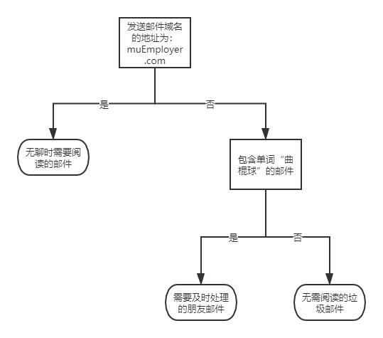

决策树的简介
你是否玩过二十个问题的游戏，就是你在脑海中想某个事物，向你提问二十个问题推测出你想的东西。这个游戏的原理和决策树类似，下面是一个判断垃圾邮件的决策树。

决策树的构造
决策树
优点：计算复杂度不高，输出的结果易于理解，对中间值的缺失不敏感，可以处理不相关特征的数据
缺点：可能会产生过度匹配的问题
适用数据类型：数值型和标称型
在构造决策树时，首先要确定哪些特征在划分数据分类时起到决定性的作用，为了划分出最好的结果，我们必须评估每个特征，创建分支的伪代码createBranch()函数如下
1 | if so returen 类标签 |
上面的伪代码createBranch()是一个递归函数，在倒数第二行直接调用自己。
决策树的一般流程：
- 收集数据
- 准备数据
- 分析数据
- 训练算法
- 测试算法
- 使用算法
信息增益
划分数据集的大原则是：将无序的数据变得更加有序，如何能知道数据是向有序的方向划分呢？方法有很多，这里的方法为香浓熵（其它方法还有基尼系数）。
熵的定义为信息的期望值，如果待分类的事物可能划分在多个分类之中，则符号$x_i$的信息定义为
$$l(x_i)=-\log_2p(x_i)$$
其中$p(x_i)$是选择分类的概率
为了计算熵，我们需要计算所有类别所有可能值包含的信息期望值，通过下面公式得到：
$$H = -\sum_{i=1}^n p(x_i)\log_2p(x_i)$$
其中n是分类的数目，下面用python计算信息熵
1 | from math import log |
下面创建了一个数据集测试一下
1 | def createDataSet(): |
1 | myDat, labels = createDataSet() |
1 | myDat |
[[1, 1, 'yes'], [1, 1, 'yes'], [1, 0, 'no'], [0, 1, 'no'], [0, 1, 'no']]
1 | calcShannonEnt(myDat) |
0.9709505944546686
熵越高，则混合的数据也越多，我们可以在数据集中添加更多的分类，观察熵是如何变化的，添加一个maybe的类别
1 | myDat[0][-1]='maybe' |
[[1, 1, 'maybe'], [1, 1, 'yes'], [1, 0, 'no'], [0, 1, 'no'], [0, 1, 'no']]
1 | calcShannonEnt(myDat) |
1.3709505944546687
划分数据集
得到熵后我们就可以按照获取最大信息增益的方法划分数据集
1 | def splitDataSet(dataSet, axis, value): |
splitDatSet()有三个参数：待划分的数据集，划分数据集的特征列，需要返回的特征值
1 | # 注意append和extend的不同 |
[1, 2, 3, [4, 5, 6]]
1 | a = [1, 2, 3] |
[1, 2, 3, 4, 5, 6]
用前面简单的数据集测试一下
1 | myDat, labels = createDataSet() |
[[1, 1, 'yes'], [1, 1, 'yes'], [1, 0, 'no'], [0, 1, 'no'], [0, 1, 'no']]
1 | splitDataSet(myDat, 1, 1) |
[[1, 'yes'], [1, 'yes'], [0, 'no'], [0, 'no']]
1 | splitDataSet(myDat, 0, 0) |
[[1, 'no'], [1, 'no']]
接下来遍历整个数据集，循环计算香农熵splitDataSet()函数，找到最好的特征划分方式。
1 | def chooseBestFeatureToSplit(dataSet): |
1 | chooseBestFeatureToSplit(myDat) |
0
1 | myDat |
[[1, 1, 'yes'], [1, 1, 'yes'], [1, 0, 'no'], [0, 1, 'no'], [0, 1, 'no']]
代码运行告诉我们第0个特征划分最好
递归构建决策树
目前我们已经构建好所有决策树算法所需的子功能模块，其工作原理如下：
得到原始数据集，然后基于最好的属性划分数据集，由于特征值可能多于两个，因此可能存在大于两个分支的数据集划分。第一次划分后，数据将被向下传递到树分支的下一节点，在这个节点上，我们可以再次划分数据，因此我们可以采用递归的原则处理数据集。
递归结束的条件是：程序遍历完所有的划分数据集的属性，或者每个分支下的所有实例都具有相同的分类。如果所有实列具有相同的分类，则得到一个叶子节点或者终止块。
1 | def majorityCnt(classList): |
上面代码的作用市，当遍历完所有的特征时，我们用投票表决的方法，返回出现次数最多的类别
1 | def createTree(dataSet, labels): |
1 | myDat, labels = createDataSet() |
{'no surfacing': {0: 'no', 1: {'flippers': {0: 'no', 1: 'yes'}}}}
绘制树形图
为了更清晰的看出我们创建的树，可以用matplotlib绘图
使用文本注解绘制树节点
1 | import matplotlib.pyplot as plt |
1 | createPlot() |

构造注解树
绘制一颗完整的树需要一些技巧，我们必须有x,y坐标，知道多少个叶节点，确定x轴的长度，树的深度，确定y轴的高度，这里编写两个函数getNumLeafs()和getTreeDepth()，来获取叶节点数和树的深度。
1 | def getNumLeafs(myTree): |
1 | def retrieveTree(i): |
1 | retrieveTree(1) |
{'no surfacing': {0: 'no',
1: {'flippers': {0: {'head': {0: 'no', 1: 'yes'}}, 1: 'no'}}}}
1 | myTree = retrieveTree(0) |
1 | getNumLeafs(myTree) |
3
1 | getTreeDepth(myTree) |
2
接下来我们画出这颗树
1 | def plotMidText(cntrPt, parentPt, txtString): |
1 | myTree = retrieveTree(0) |
1 | createPlot(myTree) |

添加一组数据再绘制
1 | myTree['no surfacing'][3]='maybe' |
1 | createPlot(myTree) |

测试和存储分类器
测试算法：使用决策树执行分类
依靠训练数据构造了决策树之后，我们可以将它用于实际数据的分类，在执行数据分类时，需要使用决策树以及用于构造决策树的标签向量。然后程序比较测试数据与决策树上的数值，递归执行该过程，直到叶子节点；最后将测试数据定义为叶子节点所属的类型。
1 | def classify(inputTree, featLabels, testVec): |
1 | myDat, labels = createDataSet() |
['no surfacing', 'flippers']
myTree = retrieveTree(0)
myTree
1 | classify(myTree, labels, [1, 0]) |
'no'
1 | classify(myTree, labels, [1, 1]) |
'yes'
使用算法：决策树的存储
决策树的构造是很耗时的任务，但如果使用创建好的决策树则可以很快的解决分类问题，这里需要使用pickle模块把决策树保存到本地。
1 | def storeTree(inputTree, filename): |
1 | storeTree(myTree, 'classifierStorage.txt') |
{'no surfacing': {0: 'no', 1: {'flippers': {0: 'no', 1: 'yes'}}, 3: 'maybe'}}
通过上述的代码，我们将分类器储存在本地，则不用每一次分类都重新学习一遍
实例：使用决策树预测隐形眼镜的类型
根据隐形眼镜的材质等信息预测患者需要的眼镜类型，流程如下
- 收集数据：提供的文本文件
- 准备数据：解析tab键分割的数据行
- 分析数据：快速检查数据正确性，使用createPlot()函数绘制树形图
- 训练算法：使用creatTree()函数
- 测试算法：编写测试函数验证决策树的正确率
- 使用算法：储存树的数据结构，以便下次使用
1 | fr = open('./MLiA_SourceCode/machinelearninginaction/Ch03/lenses.txt') |
{'tearRate': {'reduced': 'no lenses',
'normal': {'astigmatic': {'yes': {'prescript': {'myope': 'hard',
'hyper': {'age': {'pre': 'no lenses',
'young': 'hard',
'presbyopic': 'no lenses'}}}},
'no': {'age': {'pre': 'soft',
'young': 'soft',
'presbyopic': {'prescript': {'myope': 'no lenses',
'hyper': 'soft'}}}}}}}}
1 | createPlot(lensesTree) |

通过观察树我们知道，医生最多只需要问四个问题就能确定患者需要佩戴的眼镜。
虽然决策树非常好的匹配了实验数据，但匹配的选项太多了，我们将这种问题称为过度匹配（overfitting），为了减少过度匹配问题，我们可以裁剪决策树，去掉一些不必要的叶子节点。
总结
本章使用的算法称为ID3，它无法处理数值型数据，如果特征太多，也会面临其它问题。
决策树分类器就像带有终止块的流程图，终止块表示分类结果。开始处理数据集时，我们首先需要测量集合中数据的不一致性，也就是熵，然后寻找最优方案划分数据集，知道数据集中的所有数据属于同一分类。ID3可以划分标称型数据集。